来源：https://eo7n0qipwx.feishu.cn/docx/UOviddqFLo82H8xOUX9cgHBLnNK
大家好我是纸鸢，02年大二学生，一位互联网小白，今年刚刚加入生财有术。下面是我的自我介绍：
【昵称】纸鸢
【坐标】北京
【标签】阅读爱好者 AIGC研究者
【经历】
✔北京电信校园合伙人，两周时间跑通推广“天翼云”产品项目的闭环，获利1k+
✔一小时跑通天涯掘金项目，两周收入1w+
【提供资源】
✔AIGC相关资料
相信很多小伙伴和我一样，进入生财，就好像新手来到了高手云集的江湖武林。各个大佬分享的各式各样的项目看得我们眼花缭乱。
项目的确数不胜数，但好像都有一定的难度与门槛，对于还是小白的我们来说并不友好，这就导致我们有一种“守着金山却不知道如何开采”的苦恼。
如果你也有这样的感觉，那我推荐你做天涯掘金或者是类似的虚拟资料项目。为什么呢？小白如我，都能在天涯掘金项目上两周不到赚到1w+。
第一次写项目复盘，如有不妥之处，希望大家多多担待，批评指正。
首先感谢我的大哥@付一 @任平生，为我开启了互联网网赚的大门，在这里衷心说一句，跟着平生付一有肉吃！
2023.5.18，在军训休息之时，我正刷着手机，打开生财有术星球，看到@付一 在星球分享了天涯神贴项目的完整思路并给出了具体的sop文档。
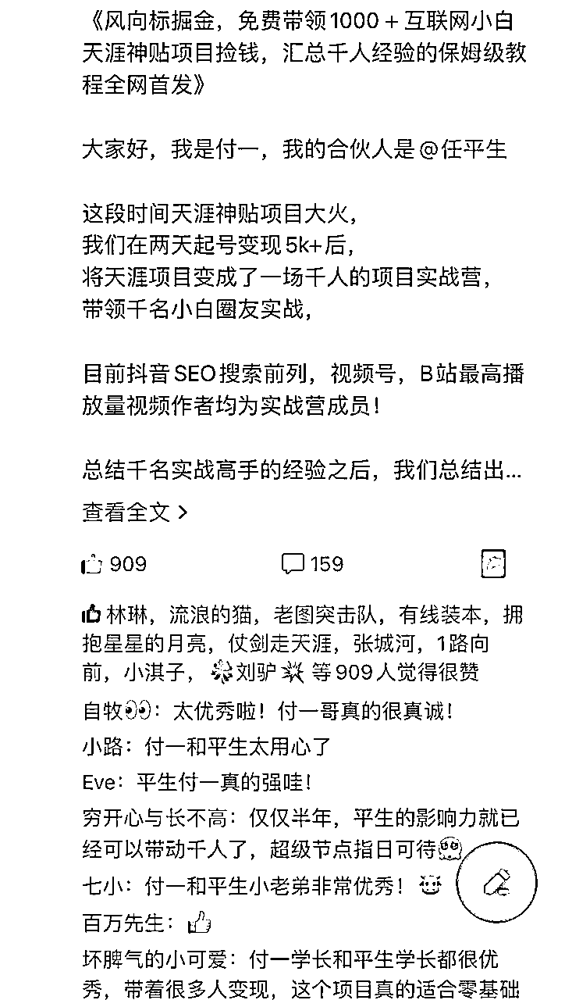
我点开文档细细看了一会儿，发觉这个项目流程明确，难度较低，很好上手，且收益不菲，对于我这种从未接触过互联网项目的小白来说再合适不过了。
于是我决定当天军训完马上动手。
回到宿舍后，我先加了付一哥的微信，在加入了训练营之后，我立刻照着文档一步一步操作。
付一哥的训练营文档里有抖音、小红书、B站等各个平台的图文和视频玩法，其中图文类是最简单的，抖音这个平台是最好做的。
对于小白来说，越简单粗暴越好，先做到从0-1，把项目跑通是最重要的。
我跟着文档里的教程，从设置账号昵称、简介、背景图，到选择内容、制作图文、发布作品，每一步都进行像素级的模仿，它怎么说我怎么做。
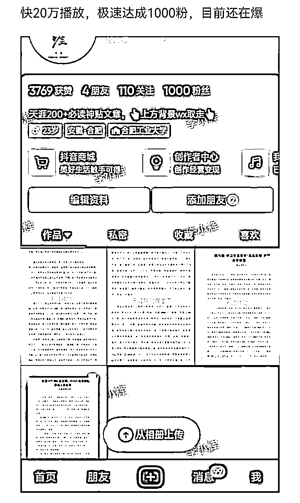
连续发布了两个作品之后，在不到一个小时的时间里，就有五个人加了好友。
第一次面对这种情况，惊喜之余也有一些紧张。
在和第一个客户交谈时，我将原价为19.9的天涯资料降到了18.8，成功卖出第一单！
从图中也能看出我当初话术的稚嫩，但胜在运气挺好，成功出单！
至此，我跑通了这个项目的闭环，用时仅仅一小时！
这是我第一次在互联网上赚到钱，也是我第一次体会到一个互联网项目的完整流程与闭环。
“动动手指就能赚钱”，这种感觉真的很奇妙，也很爽。也让我第一次觉得赚钱如此简单。
再去点开抖音，我被吓了一跳：第二个作品的播放量达到了1.3w！粉丝数达到了60。
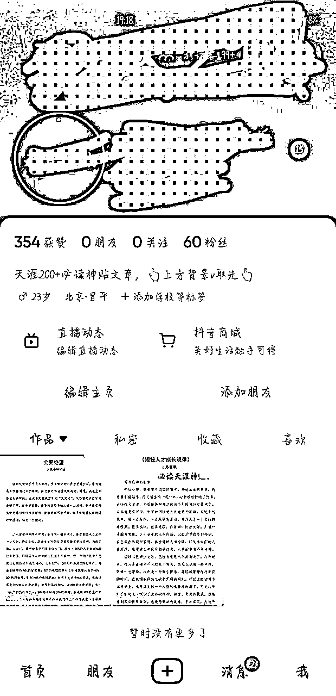
2023.5.18 跑天涯项目的第一天，出了4单，收入80+。
做项目的第一天，时间有限，学习得也不够深入，很多细节也没有做到位，再加上被跑通项目的喜悦冲昏了头脑，没能更进一步。
到了第二天，我冷静了下来，发现自己还有很多地方可以优化改进，于是我继续钻研学习文档教程。
同时，平生哥和付一哥邀请了很多这个领域的大佬来到群里进行经验分享，给到了我很多启发。
①看了许多对标账号的许多爆款作品，我发现这些作品的内容很多都是一样的，来来去去都是开悟、kk预测、灵宠等等那几篇，这就为我接下来的作品提供了素材，什么内容爆了我就发什么内容，这也印证了一个点：爆款是重复的。
②爆款作品的形式及模板各异，但都有一个特点，十分抓人眼球，很容易吸引用户的注意力，再加上让人上头的BGM，完播率很高，我把这些模板和音乐都搜集记录下来，用在自己的作品上。
③那些爆款作品当中有各种各样的水印、标注、下划线等等，我寻思着，既然他们都有这些东西，我能不能反其道而行之，直接原汁原味，截取原图后制作图文发布，既能节约时间又能与众不同。
④爆款作品有一个共性，除了浏览量和点赞量很高之外，它们的评论区也十分热闹。我观察了一下，发现这些作品的作者十分善于引导评论，我的作品也有评论，但我没运营好、引导好，导致作品不能进一步加热，这点需要改进。
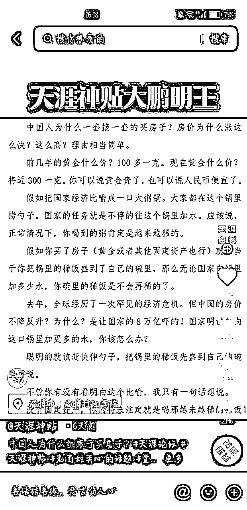
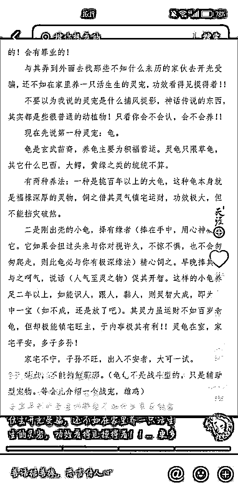
①话术稚嫩。在与顾客交流的过程中，话术不够成熟，不能勾起顾客的购买欲望，导致成交率较低。
于是我做了两件事，一是找到同行，装作是他们的顾客，去“被营销”，学习他们的话术和成交流程；二是向训练营里的前辈们提问，他们指点了我许多，给予了我莫大的帮助。
②一次性生意。成功成交之后，我和顾客几乎就没有交集了，从此形同陌路。这样的一次性生意，不能发挥私域的最大价值。
于是我向@付一 哥请教了一下，他给出了一个很棒的思路：将卖天涯资料的教程玩法卖给顾客，价格自己定，能再赚一笔的同时还能与顾客产生后续的交流与互动，提升信任感，为后续打造个人IP积累原始粉丝，奠定基础。
③天涯资料是通过夸克网盘分享卖出去的，但用夸克网盘的人比较少，大多数人还是比较熟悉百度网盘，于是我把夸克网盘和百度网盘一起分享给顾客，或者以邮件的形式发给顾客，顾客能直接接收到并下载，为顾客提供便利、避免麻烦、省下时间。
意识到上述问题之后，我立即想办法改进，或是继续钻研教程，把更多小细节做到位；或是咨询大佬或者群内小伙伴，寻求他们的帮助；或是找同行，体验他们的完整流程。
这是我改进后的结果：
第二代：
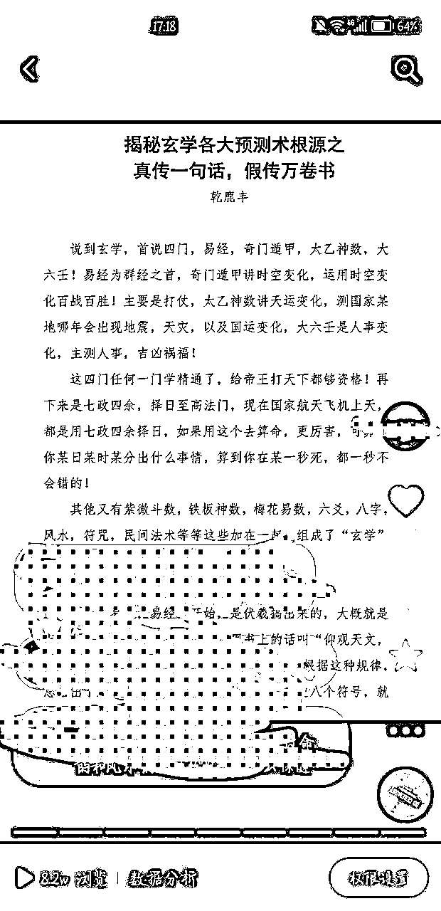
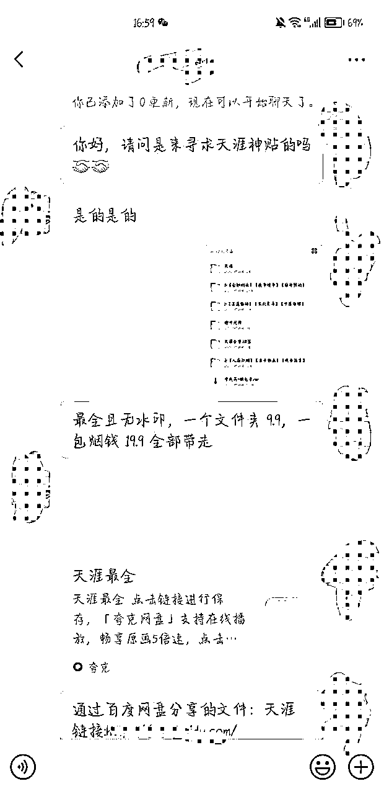
第三代：
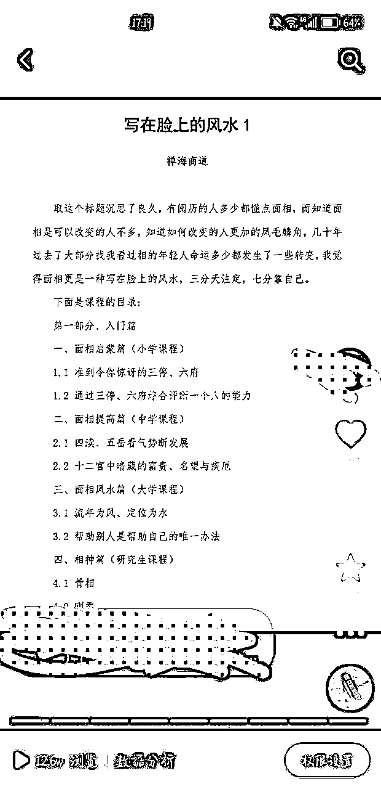
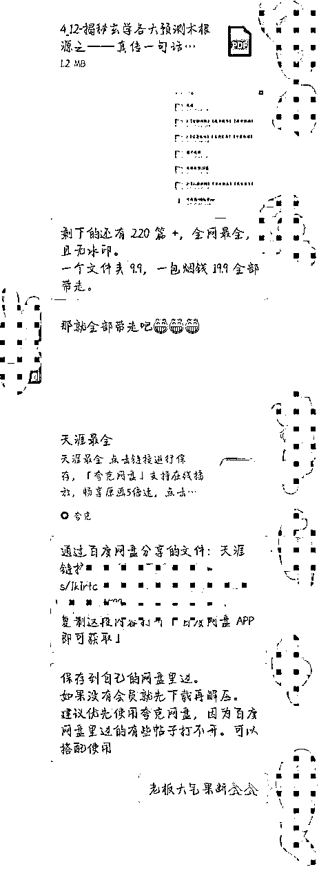
其中还有一些比较有趣的案例，一起放上来给大家分享分享
一个爽快人：
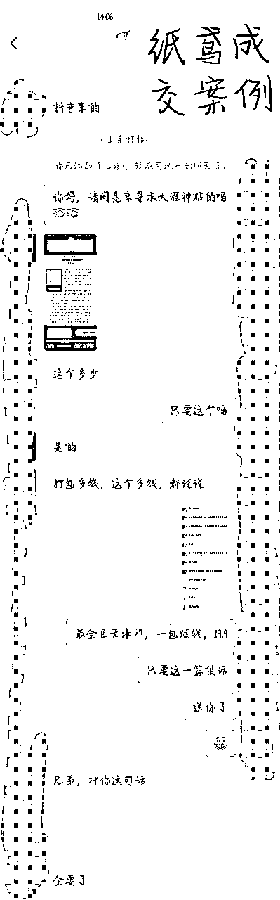
运用训练营大佬的教导的方法一单卖到99、66元！
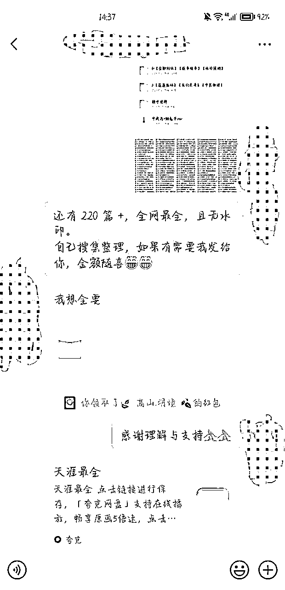
经过了几天的持续学习和更新换代，我迎来了爆发期。
27个作品有19个超过了1w浏览量，作品最高浏览量达到了12.6w，粉丝数突破4k！
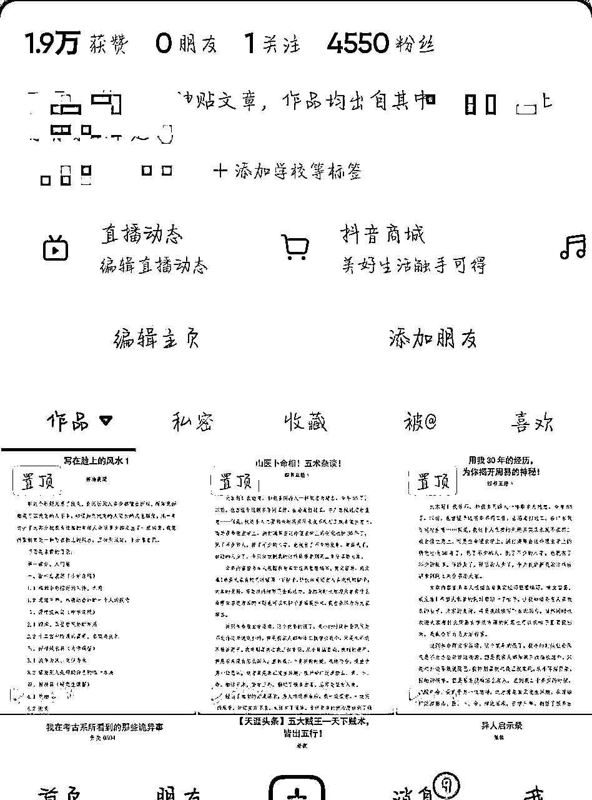
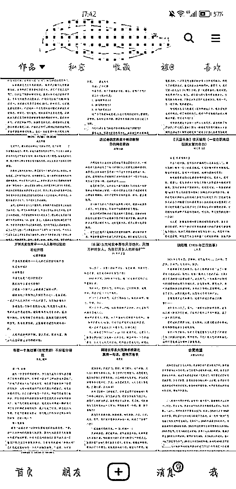
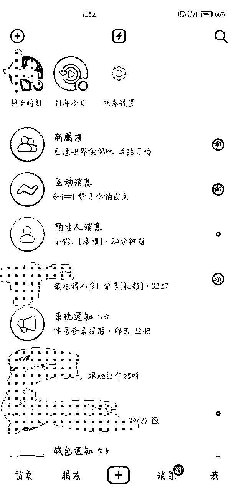
第一天引流7个人，第二天引流40个人，第三天70个，第四天100个······
我用的是小号承接流量，这个号原本只有50不到的好友，现在已经700+了。

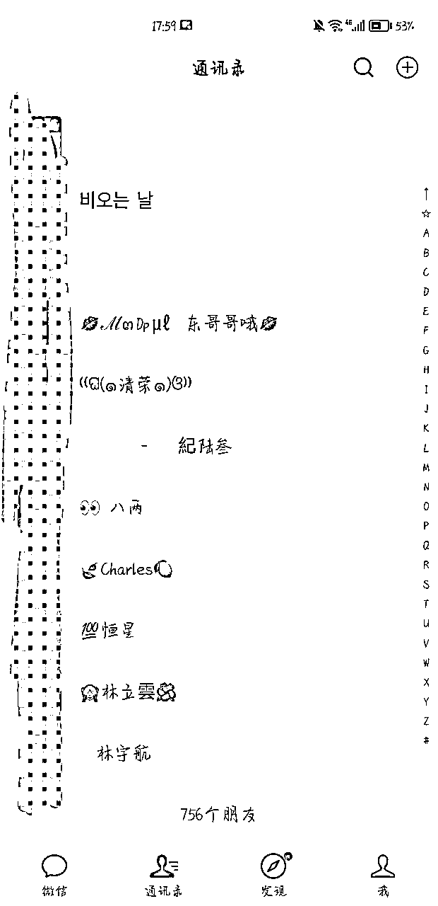
第一天，收入80+；第二天，收入400+；第三天，收入600+；第四天，收入900+；第五天，也就是有一个作品大爆，达到了12.6w浏览量的那天，收入1200+，后续基本稳定在800+。
怕小号承接流量太多被限制，我分了流量一些到自己的私人号上。
两个号，源源不断有收入进账。
之后，又在付一和平生哥的帮助下开通了自助入群系统，流程自动省力，专心做流量。
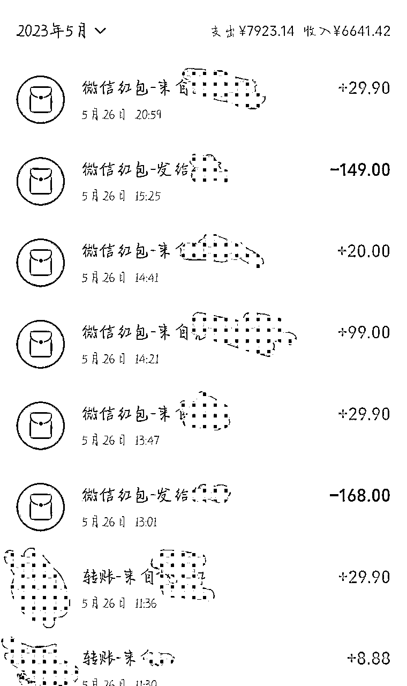

有想法就马上干，完成比完美更重要。可能是初生牛犊不怕虎吧，在看到这个项目的时候，我并没有想太多，直接就上手实操了。
对于小白来说，选择什么项目其实没有那么重要，最重要的是躬身入局，亲身下场体验，并坚持下去。
前期得到的正反馈可能少之又少，但入门这一段路其实是最难的，跨过了这道坎方能一飞冲天。
执行的过程中不断发现问题、思考问题、解决问题，吸取每一次经验教训，一点一点地优化改进，从1.0版本到2.0版本再到3.0版本，一直更新迭代，没有最好，只有更好。
这其实是做互联网项目最好的思路之一。有教程就跟着教程一步一步来。
找到对标账号进行像素级的模仿，从昵称、简介、头像、背景图、作品内容、音乐、文案、标签等等细节入手，一丝一毫都不要放过。
抄完之后要有自己的思考与创新，正如我上述的反其道而行之，把原图直接做成图文，什么东西都不加，这便是我的创新点与独特之处。
天涯资料里面有很多写玄学的东西，在发完第一篇玄学的内容之后，我发现它的浏览量和点赞数都比其他作品高出许多，于是我就怼着玄学这个话题发，大获成功。
相信我，别人做这样的账号能挣到钱，你也可以。相信我，我这样的互联网小白都能挣到钱，你也可以。
对于小白来说，第一次做项目，盈利多少并不是最重要的。最重要的是能在实操的过程中积攒多少经验，增长多少才干，提升多少能力。
在天涯掘金这个项目中，对我来说，最有意义的是我对自媒体的底层逻辑有了更加清晰的认知，从公域引流到私域，从陌生人到客户，到最终的成交与复购。
这样的经验与能力，于我们来说才是最有价值的。
在跑这个项目的过程中，我遇到过形形色色的人，有爽快大气，直接打钱的，有磨磨唧唧，来回扯皮的，有只想白嫖的，有加好友之后来搞人心态、举报账号的······在接触了各种各样的人之后，真是感慨世界最大，无奇不有。我们只能做好自己，不断打磨话术，提升自己“看人下菜”的能力，遇上实在是很不对付的，拉黑删除就好，切勿被他人影响了好心情。